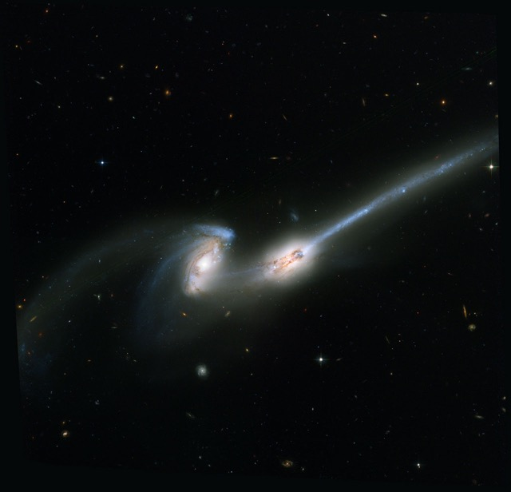
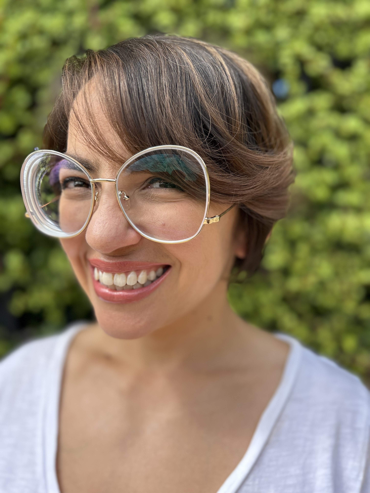
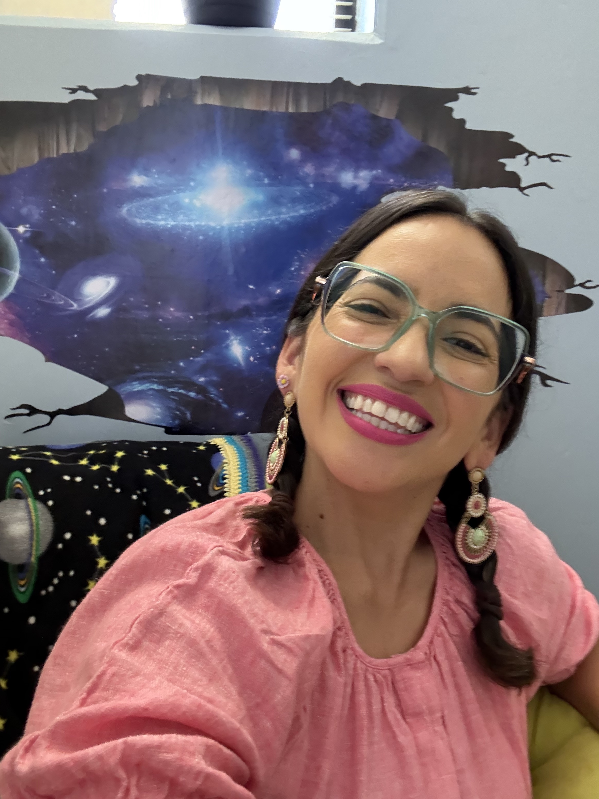
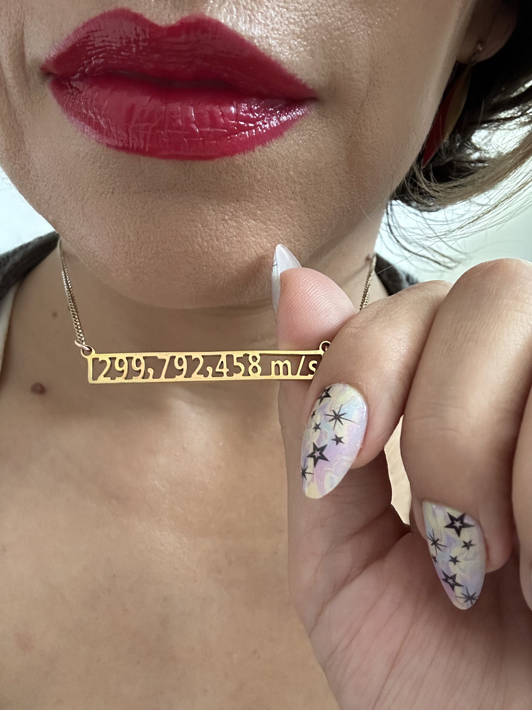

About Me
M. Katy Rodriguez Wimberly, PhD
Bio!



Hi, I'm Katy Rodriguez Wimberly, PhD — astrophysicist, storyteller, and passionate advocate for equity in science. As an Assistant Professor at CSU San Bernardino, I explore the faintest and most ancient galaxies orbiting the Milky Way. These tiny, elusive ultra-faint dwarf galaxies hold clues to the early Universe. Using cosmological simulations and cutting-edge telescopes, I uncover the history of the cosmos one data point at a time.
But my work reaches far beyond the stars.
I am a dynamic public speaker and science communicator bringing energy, clarity, and inclusivity to every stage. Whether discussing the mysteries of near-field cosmology or sharing my unconventional journey toward science, I connect deeply with audiences — educating, inspiring, and sparking curiosity in astronomy enthusiasts of all ages. I've been an invited speaker at major scientific meetings, like the American Astronomical Society, and community venues, including The Santa Barbara Museum of Natural History and California State University's STEM-NET’s Virtual Research Café. I've written for Mercury Magazine, created science communication shorts for AstronoMouse on YouTube, shared my journey to STEM with The Story Collider, and have been a featured alumni in Road to Science Happiness and The Reionization of Katy Rodriguez Wimberly.
My journey is as compelling as my research. I was discouraged from STEM in high school but carved my own path through determination, and a few plot twists. I pursued acting, joined the Army Reserves as a saxophonist (yes the Army has bands!), and worked full-time as a Disneyland entertainer — all while attending community college. A spark of inspiration from Star Trek’s Captain Janeway rekindled my childhood dream of space, leading me to earn a Physics BS from CSU Long Beach, a PhD from UC Irvine, and completing postdoctoral work at UC Riverside before landing my current faculty role.
I am deeply committed to creating a more inclusive astronomical community. I serve as Director of Mentorship for the Cal-Bridge Program, a state-wide STEM program, and am the Vice President of the Board of Directors for the over 135 year-old professional organization, Astronomical Society of the Pacific. My mission is to normalize a holistic approach to academic success and uplift marginalized voices in STEM.
At home, my universe revolves around my husband and two daughters — my favorite adventure partners for hikes, laughs, and cozy snuggles. Music still fills my life, and yes — Disneyland remains a beloved escape.
I would love to speak at your next event! I bring astrophysical expertise, a vibrant life story, and an unshakable commitment to equity and education. Whether in lecture halls or community spaces, I makes science personal, powerful — and undeniably fun.
Socials
I'd love to connect with you! Find me on these platforms: